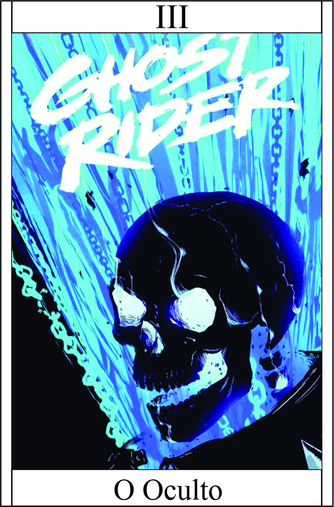

O Oculto
Têndencia: Neutro Mal
Passiva:
Sem presença:
você possui a capacidade de fazer com que todas as provas e evidências que o incriminam sejam destruídas pelo fogo azul do oculto.
Essa habilidade especial permite que você interfira no tecido da realidade, invocando uma chama azul misteriosa e poderosa que consome qualquer evidência ou prova contra você. Essa chama é capaz de queimar e desfazer qualquer vestígio que possa ser usado para incriminá-lo.
Essa habilidade está relacionada especificamente às provas e evidências tangíveis. Ela afeta a percepção das pessoas, memórias ou eventos presenciados por outras pessoas.
Legado 1 - Sopro do Fogo Azul:
Você possui a capacidade de cuspir fogo azul que, ao entrar em contato com algo ou alguém, causa dano de 3 pontos. Você tem 10 munição e pode disparar até 10 projéteis de fogo azul.
Essa habilidade permite que você projete a chama azul do seu sopro, que é capaz de queimar e causar dano a qualquer coisa que tocar.
Esses projéteis podem ser direcionados a múltiplos alvos ou concentrados em um único alvo, dependendo da sua estratégia e escolha durante o combate.
Disparar 10 vezes | Depois gastar munição espera 5 minutos | Dano 3
Condição para ativar a habilidade:
Precisa cupsir
Legado 2 - Confusão Mental
Com seu poder oculto de manipulação mental, você é capaz de semear confusão e apagar a memória em tempo real do alvo. Essa habilidade desorientadora exige um raciocínio rápido para lidar com os efeitos instáveis que ela causa.
Inimigo precisa jogar teste de raciocínio para poder esquivar ou atacar
Apagamento de Memória:
Ao ativar a Confusão Mental, você interfere na mente do alvo, apagando temporariamente suas memórias recentes. Isso resulta em desorientação e dificuldade do alvo em lembrar de eventos ou ações imediatas.
Confusão Instantânea:
A habilidade cria uma desordem mental instantânea no alvo, tornando-o desorientado e incapaz de tomar decisões claras. Isso pode induzir a erros de julgamento, hesitação ou até mesmo paralisia momentânea.
Raciocínio Rápido:
A Confusão Mental exige um raciocínio rápido por parte do usuário, pois é necessário adaptar-se às mudanças no comportamento e ações do alvo. Um atraso na resposta pode permitir que o alvo recupere a consciência e se recupere da confusão.
Teste de Percepção:
Para superar os efeitos da Confusão Mental, o alvo precisa realizar testes de percepção e ter um raciocínio rápido para discernir a realidade da ilusão criada pela habilidade. Aqueles com uma percepção aguçada e habilidades mentais robustas têm mais chances de resistir aos efeitos da habilidade.
Legado 3 - Chamas do Desvanecer:
Você tem o poder de criar chamas azuis intensas que possuem a capacidade de desintegrar e desvanecer objetos e estruturas. Essa habilidade é extremamente destrutiva, permitindo que você elimine obstáculos ou inimigos rapidamente.
Chamas Devoradoras:
Ao ativar as Chamas do Desvanecer, você cria uma onda de fogo azul que consome tudo em seu caminho. Essas chamas são capazes de desintegrar objetos, estruturas e até mesmo corpos.
Destruição Intensa:
As chamas do desvanecer são altamente destrutivas
Dano: (Raciocínio) + 5 (dispara chama pela mão) | + acerto
Condição para ativar a habilidade:
É necessário que haja objetos ou estruturas inflamáveis próximos.